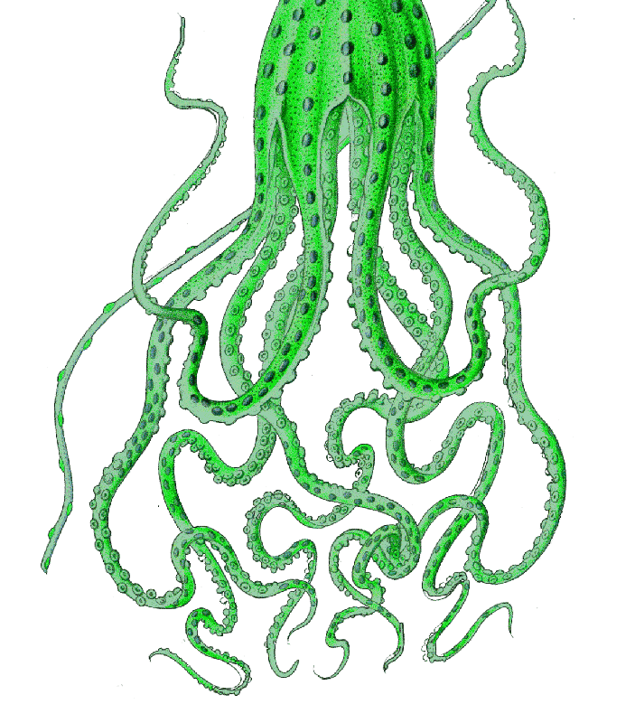
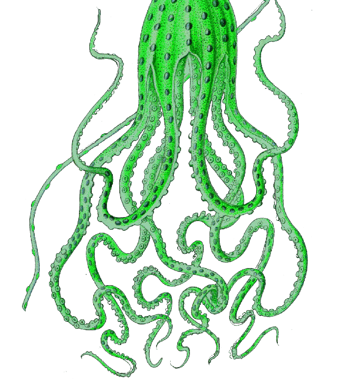
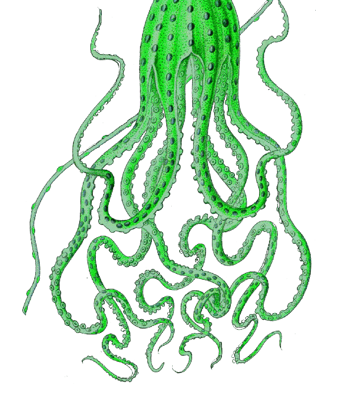

![=================================================================
San Francisco, CA 12 June 1993
Dear Dale:
I welcome your inquiries, and I am glad to see that the 'Pentacle' memo has come out of obscurity. The document you sent me appears to be genuine. It corresponds to the one I saw.
The question of its origin may be unimportant. Perhaps the people who released it will go public eventually (I have an idea who they might be). The best course of action, however, would be to seek access to the original document, and to others of the same vintage.
I enclose a copy of my recent comments to Barry Greenwood on the same subject.
With best regards,
/s/ Jacques
=================================================================
Dale: FYI
(I don't know if this will be published by Greenwood.) J.V.
27 April 1993
Barry Greenwood
Dear Barry:
Thank you for sending me your thoughtful commentary about the Pentacle document. I do agree with you on one point: the significance of the memo comes, in part, from what it does not say. In particular, it makes no reference to any recovered UFO hardware, at Roswell or elsewhere, or to alien bodies. The greater significance of what it does say will slowly emerge in coming years as the overall implications come to light. Let me draw your attention to three specific points.
1. Project Twinkle and other observational efforts by the military, which you mention in an effort to show that Pentacle was only dusting off an old idea, were purely passive projects. In sharp contrast the Pentacle proposal goes far beyond anything mentioned before. It daringly states that 'many different types of aerial activity should be secretly and purposefully scheduled within the area (my emphasis).' It is difficult to be more clear. We are not talking simply about setting up observing stations and cameras. We are talking about large-scale, covert simulation of UFO waves under military control.
2. The greatest implication, which is perhaps not obvious on first reading but which amounts to a scandal of major proportion in the eyes of any scientist, has to do with the outright manipulation of the Robertson panel. Here is a special meeting of the five most eminent scientists in the land, assembled by the government to discuss a matter of national security. Not only are they not made aware of all the data, but another group has already decided 'what can and cannot be discussed (Pentacle's own words!)' when they meet. Dr. Hynek categorically stated to me that the panel was not briefed about the Pentacle proposals.
3. Revelation of this document may seem irrelevant to Just Cause, but its explosive nature wasn't lost on Battelle. As I noted in Forbidden Science, and as Fred Beckman vividly recalls to this day, the Project Stork team reacted with fury when Hynek went back to Battelle in 1967, demanding to know the truth. The man I have called Pentacle snatched his notes away and told him in no uncertain terms that the contents of the memo were not to be discussed, under any circumstances.
I find it odd that a group that claims to be interested in the historical study of our field, as Just Cause does, should fail to see the significance of the Pentacle Memo, which is an authentic document, when so much time, money and ink have been devoted over the last several years to an in-depth analysis of the MJ-12 papers, which were faked. Perhaps the Pentacle memo only proves that scientific studies of UFOs (and even their classified components) have been manipulated since the fifties. But it also suggests several avenues of research which are vital to the future of this field: why were Pentacle's proposals kept from the panel? Were his plans for a secret simulation of UFO waves implemented? If so, when, where and how? What was discovered as a result? Are these simulations still going on? I invite your group to turn its investigative resources and its analytical talent to this important task.
In reading Forbidden Science, you should recognize that the book is a Diary, not an analytical report or a memoir. Therefore many important inferences, many relevant details, can only be found by reading between the lines. Your preliminary analysis of the Pentacle memo is not unfair, but it is somewhat simplistic, and it takes it out of context. I invite you to go back for a second, closer reading.
cc: Fred Beckman
/s/ Jacques Vallee
=================================================================
SECRET
SECURITY INFORMATION
G-1579-4
cc: B. D. Thomas
H. C. Cross/A. D. Westerman
L. R. Jackson
W. T. Reid
P. J. Rieppal
V. W. Ellsey/R. J. Lund January 9, 1953
Files
Extra [handwritten]
Mr. Miles E. Goll
Box 9575
Wright-Patterson Air Force Base, Ohio
Attention Capt. Edward J. Ruppelt
Dear Mr. Goll:
This letter concerns a preliminary recommendation to ATIC on future methods of handling the problem of unidentified aerial objects. This recommendation is based on our experience to date in analyzing several thousands of reports on this subject. We regard the recommendation as preliminary because our analysis is not yet complete, and we are not able to document it where we feel it should be supported by facts from the analysis.
We are making this recommendation prematurely because of a CIA-sponsored meeting of a scientific panel, meeting in Washington, D.C., January 14, 15, and 16, 1953, to consider the problem of 'flying saucers'. The CIA-sponsored meeting is being held subsequent to a meeting of CIA, ATIC, and our representatives held at ATIC on December 12, 1952. At the December 12 meeting our representatives strongly recommended that a scientific panel not be set up until the results of our analysis of the sighting-reports collected by ATIC were available. Since a meeting of the panel is now definitely scheduled we feel that agreement between Project Stork and ATIC should be reached as to what can and what cannot be discussed at the meeting in Washington on January 14-16 concerning our preliminary recommendation to ATIC.
Experience to date on our study of unidentified flying objects shows that there is a distinct lack of reliable data with which to work. Even the best-documented reports are frequently lacking in critical information that makes it impossible to arrive at a possible identification, i.e. even in a well-documented report there is always an element of doubt about the data, either because the observer had no means of getting the required data, or was not prepared to utilize the means at his disposal. Therefore, we recommend that a controlled experiment be set up by which reliable physical data can be obtained. A tentative preliminary plan by which the experiment could be designed and carried out is discussed in the following paragraphs.
Based on our experience so far, it is expected that certain conclusions will be reached as a result of our analysis which will make obvious the need for an effort to obtain reliable data from competent observers using the [... unreadable...] necessary equipment. Until more reliable data are available, no positive answers to the problem will be possible.
=================================================================
Mr. Miles E. Goll -2- January 9, 1953
We expect that our analysis will show that certain areas in the United States have had an abnormally high number of reported incidents of unidentified flying objects. Assuming that, from our analysis, several definite areas productive of reports can be selected, we recommend that one or two of theses areas be set up as experimental areas. This area, or areas, should have observation posts with complete visual skywatch, with radar and photographic coverage, plus all other instruments necessary or helpful in obtaining positive and reliable data on everything in the air over the area. A very complete record of the weather should also be kept during the time of the experiment. Coverage should be so complete that any object in the air could be tracked, and information as to its altitude, velocity, size, shape, color, time of day, etc. could be recorded. All balloon releases or known balloon paths, aircraft flights, and flights of rockets in the test area should be known to those in charge of the experiment. Many different types of aerial activity should be secretly and purposefully scheduled within the area.
We recognize that this proposed experiment would amount to a large-scale military maneuver, or operation, and that it would require extensive preparation and fine coordination, plus maximum security. Although it would be a major operation, and expensive, there are many extra benefits to be derived besides the data on unidentified aerial objects.
The question of just what would be accomplished by the proposed experiment occurs. Just how could the problem of these unidentified objects be solved? From this test area, during the time of the experiment, it can be assumed that there would be a steady flow of reports from ordinary civilian observers, in addition to those by military or other official observers. It should be possible by such a controlled experiment to prove the identity of all objects reported, or to determine positively that there were objects present of unknown identity. Any hoaxes under a set-up such as this could almost certainly be exposed, perhaps not publicly, but at least to the military.
In addition, by having resulting data from the controlled experiment, reports for the last five years could be re-evaluated, in the light of similar but positive information. This should make possible reasonably certain conclusions concerning the importance of the problem of 'flying saucers'.
Results of an experiment such as described could assist the Air Force to determine how much attention to pay to future situations when, as in the past summer, there were thousands of sightings reported. In the future, then, the Air Force should be able to make positive statements, reassuring to the public, and to the effect that everything is well under control.
Very truly yours,
[unsigned]
H. C. Cross
HCC:??
=============================================================
=============================================================
Addendum: 18-February-2000 - Thanks to the work of several dedicated researchers into the historical aspects of UFO, much more is known today than was known back in 1993, but much yet remains to be uncovered. Wendy Connors of the Project Sign Research Center, is one of these fine researchers; she provided the following comments:
'Col. Miles Goll was an early kingpin at Wright Field and first worked as head of Fire Control for the Armament Lab during the war. Later, he was in T-2 and controlled access to the special situation room. Very little else is known about him, but he did have great connections at Wright Field and the Pentagon. I've been trying to dig up stuff on him, but it's pretty sparse.'
Seven Status Reports for Project STORK
Part 4 of 4 parts
[ RESTRICTED ]
[ SECURITY INFORMATION ] UNCLASSIFIED
SUMMARY OF DATA FROM 168 COMPLETED
TENTATIVE OBSERVER'S QUESTIONNAIRES*
Q. 1.2 Time of day.
Per Cent Per Cent
0000-0100 3.0 1201-1300 0.6
0101-0200 0.6 1301-1400 1.2
0201-0300 2.4 1401-1500 3.0
0301-0400 3.0 1501-1600 2.4
0401-0500 0.0 1601-1700 1.8
0501-0600 0.6 1701-1800 3.5
0601-0700 0.6 1801-1900 4.1
0701-0800 1.8 1901-2000 9.5
0801-0900 1.8 2001-2100 17.9
0901-1000 2.4 2101-2200 17.3
1001-1100 4.0 2201-2300 5.3
1101-1200 1.8 2301-2400 9.5
Inaccurate 1.8
Q. 1.4 Certainty rating.
a. Certain 75.5%
b. Fairly certain 17.45%
c. Not very sure 1.8%
d. Just a guess 1.2%
e. No response 4.2%
Q. 3 Where were you located when you saw the object?
a. Inside a building 5.9%
b. In a car 14.9%
c. Outdoors 78.6%
d. In an airplane 0.6%
e. At sea 0.0%
f. Other 0.0%
Q. 3.1 Were you:
a. In the business section of a city? 5.3%
b. In the residential section of a city? 48.8%
c. In open countryside? 38.3%
d. Flying near an airfield? 0.0%
e. Flying over a city? 0.0%
f. Flying over open country? 1.2%
h. Other
(a) Near an airport or airbase 5.9%
(b) Mountains 0.6%
* The percentage figures are based on the 168 completed questionnaires.
They show how the 168 people answered the questions.
[ RESTRICTED ] UNCLASSIFIED
[ SECURITY INFORMATION ]
================================================================
[ RESTRICTED ]
[ SECURITY INFORMATION ] UNCLASSIFIED
Q. 7 Were you moving (in a vehicle) at any time while you saw the object?
a. Yes 17.9%
b. No 82.1%
Q. 8 and 8.1 What direction were you facing when you first saw the object, and what direction
were you facing when you last saw the object?
First saw (percentage)
N NE E SE S SW W NW
N 5.9 0.6 1.2 0.6 0.6 0 0.6 1.2
NE 2.4 5.3 1.8 0 0 0.6 0 1.2
E 1.2 0 7.2 0 0 0.6 0.6 0
SE 1.8 0.6 2.4 7.2 1.2 0.6 1.2 0.6
S 0 1.2 1.2 1.2 4.8 0 2.4 0.6
SW 0.6 1.2 1.2 1.2 0.6 4.1 0 0
W 1.2 0 1.2 0 1.8 1.8 7.7 1.2
NW 0.6 0 1.8 0 0.6 1.2 1.2 1.8
Incomplete: 10.7%
Q. 8.2 Certainty rating:
a. Certain 80.5%
b. Fairly certain 16.1%
c. Not very sure 1.2%
d. Just a guess 0.0%
e. No response 2.4%
Q. 9 Were you wearing eye glasses?
a. Yes 31.6%
b. No 63.7%
c. No response 4.7%
[ RESTRICTED ] UNCLASSIFIED
[ SECURITY INFORMATION ]
================================================================
[ RESTRICTED ]
[ SECURITY INFORMATION ] UNCLASSIFIED
Q. 10 How was the object seen?
a. Through window glass 3.6%
b. Through windshield 7.8%
c. Through binoculars 12.6%
d. Through telescope 0.6%
e. Through theodolite 0.6%
f. Through sun glasses 0.6%
g. Through open space 69.5%
h. Other
(1) Porch screen 1.2%
i. No response 3.6%
Q. 11 Weather conditions,
CLOUDS (11.1)
a. Clear sky 74.8%
b. Hazy 2.4%
c. Scattered clouds 16.2%
d. thick or heavy clouds 4.2%
e. Don't remember 0.6%
f. No response 1.8%
WIND (11.2)
a. No wind 51.8%
b. Slight breeze 34.6%
c. Strong wind 1.2%
d. Don't remember 6.5%
e. No response 5.9%
WEATHER (11.3)
a. Dry 81.0%
b. Fog, mist, light rain 0.6%
c. Moderate or heavy rain 0.0%
d. Snow 0.0%
e. Don't remember 0.6%
f. No response 17.8%
TEMPERATURE (11,4)
a. Cold 1.8%
b. Cool 17.?%
c. Warm 52.6%
d. Hot 20.1%
e. Don't remember 0.6%
f. No response 7.1%
[ RESTRICTED ] UNCLASSIFIED
[ SECURITY INFORMATION ]
================================================================
[ RESTRICTED ]
[ SECURITY INFORMATION ] UNCLASSIFIED
Q. 12 Estimate how long you saw the object.
a. 1 sec. to 10 sec. 25.6%
b. 11 sec. to 30 sec. 15.5%
c. 30 sec. to 1 min. 11.9%
d. 1 min. to 2 min. 6.5%
e. 2 min. to 5 min. 12.5%
f. 5 min. to 10 min. 7.7%
g. Over 10 min. 19.1%
h. No response 1.2%
Q. 12.1 Certainty rating.
a. Certain 49.4%
b. Fairly certain 40.8%
c. Not very sure 1.9%
d. Just a guess 4.3%
e. No response 3.7%
Q. 13 Did the object look:
a. Solid? 78.5%
b. Transparent? 4.8%
c. Don't know 3.6%
d. Both 0.6%
e. No response 12.6%
Q. 14 Did the object at any time:
Yes No Don't
Know No R.
14.1 Change direction? 39.6 54.5 1.2 4.8
14.2 Change speed? 27.4 64.2 3.6 4.8
14.3 Change size? 14.9 75.1 1.2 8.9
14.4 Change color? 11.9 79.3 0.0 8.9
14.5 Break up or explode? 4.8 86.9 0.0 8.4
14.6 Give off smoke? 7.7 76.9 5.3 10.1
14.7 Change brightness? 20.2 72.1 1.2 6.6
14.8 Flicker, throb, etc.? 17.7 72.2 2.4 7.7
14.9 Remain motionless? 18.5 69.8 2.9 8.9
Q. 15 Did the object give off a light?
a. Yes 72.3%
b. No 22.3%
c. Don't know 3.6%
d. No response 1.8%
UNCLASSIFIED
[ RESTRICTED ]
[ SECURITY INFORMATION ]
================================================================
[ RESTRICTED ]
[ SECURITY INFORMATION ] UNCLASSIFIED
Q. 16 Sound and Color;
SOUND (16.1)
a. Yes 5.9%
b. No 89.9%
c. Unclassified 1.8%
d. Don't know 0.6%
e. No response 1.8%
COLOR (16.2)
a. Silver 16.2% g. White (blue-white) 24.2%
b. Pink 1.9% h. Green-blue 2.5%
c. Orange 13.0% i. Blue 4.9%
d. Green 1.9% j. Dark 3.1%
e. Gray 2.5% k. Red 2.5%
f. Yellow 14.9% l. Unclassified 4.9%
m. No response 7.5%
Q. 17 Was there more than one object? 30.9% responded yes, *
a. Two 38.5% g. Eight 5.7%
b. Three 19.2% h. Nine 1.9%
c. Four 5.7% i. Ten 1.9%
d. Five 17.6% j. Seventeen 1.9%
e. Six 1.9% k. Twenty 1.9%
r. Seven 1.9% l. Twenty.five 1.9%
Q. 18.1 Did the object move behind something?
a. Yes 26.8%
b. No 64.9%
c. Don't know 5.9%
d. No response 2.5%
Q. 18.2 Did the object move in front of something?
a. Yes 5.9%
b. No 76.8%
c. Don't know 3.0%
d. No response 14.2%
Q. 18.2 Did the object move in front of something?
a. Yes 5.9%
b. No 76.8%
c. Don't know 3.0%
d. No response 14.2%
* Percentages below are per cent of the 30.9% that answered yes.
UNCLASSIFIED
[ RESTRICTED ]
[ SECURITY INFORMATION ]
================================================================
[ RESTRICTED ]
[ SECURITY INFORMATION ] UNCLASSIFIED
Q. 19 Size estimates:
a. Pea 19.1% j. Other:
b. Baseball 12.5% (1) 50-100 ft. 1.8%
c. Basketball 13.7% (2) 150 ft. 0.6%
d. Bicycle wheel 7.7% (3) Softball 4.8%
e. Office desk 1.2% (4) Football 1.2%
f. Automobile 2.5% (5) Star 5.4%
g. Small airplane 4.2% (6) ping-pong ball 2.5%
h. Large airplane 5.4% (7) 1/20' x 1/4 (theodolite) 0.6%
i. Dirigible 6.6% (8) Don't know 4.8%
(9) No response 5.4%
Q. 20 Certainty rating:
a. Certain 47.6%
b. Fairly certain 35.1%
c. Not very sure 5.4%
d. Just a guess 5.4%
e. No response 6.6%
Q. 20.1 How high above the earth was it?
a. 0-1000 ft. 8.4% e. Low 1.8%
b. 1001-5000 ft. 17.9% f. Don't know 28.2%
c. 5001-10,000 ft. 6.6% g. No response 11.4%
d. 10,000 & over 25.8%
Q. 20,2 How far was it from you?
a. 0-1000 ft. 3.0% e. Short distance 1.2%
b. 1001-5000 ft. 7.2% f. Don't know 1.2%
c. 5001-10,000 ft. 5.9% h. No response 16.6%
d. 10,000 ft. & over 38.4%
Q. 20.3 How fast was it going?
a. 0 mph 1.8% g. Slow 3.6%
b. 1-100 mph 9.0% h. Fast 8.4%
c. 101-200 mph 5.4% j. Don't know 23.5%
d. 201-500 mph 14.5% k. No response 15.7%
e. 501-1000 mph 9.0%
f. 1001-over mph 9.0%
UNCLASSIFIED
[ RESTRICTED ]
[ SECURITY INFORMATION ]
================================================================
[ RESTRICTED ]
[ SECURITY INFORMATION ] UNCLASSIFIED
Q. 20.4 Certainty rating:
a. Certain 18.1%
b. Fairly certain 26.g%
c. Not very Sure 12.0%
d. Just a guess 21.1%
e. No response 22.3%
Q. 21 How did the object disappear from view?
a. Suddenly 52.8%
b. Gradually 40.1%
c. Don't remember 0.6%
d. Didn't 0.6%
e. No response 5.9%
Q. 26 Was this the first time that you have seen an object like this?
a. Yes 91.6%
b. No 7.8%
c. No response 0.6%
Q. 29 Was anyone else with you at the time you saw the object?
a. Yes 75.6%
b. No 23.8%
c. No response 0.6%
UNCLASSIFIED
[ RESTRICTED ]
[ SECURITY INFORMATION ]
================================================================
[ RESTRICTED ]
[ SECURITY INFORMATION ] UNCLASSIFIED
EXHIBIT II. U. S. AIR FORCE TECHNICAL INFORMATION
SHEET, FORM A AND FORM B
UNCLASSIFIED
[ RESTRICTED ]
[ SECURITY INFORMATION ]
================================================================
View images of U. S. Air Force Technical Information Sheet, Form A and Form B
(Opens a new window)
================================================================
SEVENTH STATUS REPORT
on
CONTRACT AF-19741, PPS-100
to
AIR TECHNICAL INTELLIGENCE CENTER
WRIGHT-PATTERSON AIR FORCE BASE
November 10, 1952
================================================================
TABLE OF CONTENTS
ANALYSIS OF EXISTING SIGHTING REPORTS . . . . . . . . . . . 1
ANALYSIS OF SOIL AND VEGETATION SAMPLES . . . . . . . 2
CONSULTANT ON ASTRONOMY . . . . . . . . . . . . . . . . . . . . . . 2
INTERROGATION FORMS . . . . . . . . . . . . . . . . . . . . . . . . . . . . . 4
FUTURE WORK . . . . . . . . . . . . . . . . . . . . . . . . . . . . . . . . . . . . . . 4
================================================================
SEVENTH STATUS REPORT
on
CONTRACT AF-19741, PPS-100
to
AIR TECHNICAL INTELLIGENCE CENTER
WRIGHT-PATTERSON AIR FORCE BASE
November 10, 1952
This report describes progress for the period from October 11, 1952, to November 10, 1952.
ANALYSIS OF EXISTING SIGHTING REPORTS
Sighting reports dated up to and including June, 1952, have been processed. Except for the reports dated 1947 and 1948, all sighting reports up to and including March, 1952, have been evaluated. The sighting reports for 1947 and 1948 are not available for evaluation. As soon as the 1947 and 1948 reports are available and can be evaluated, all sighting reports for the years 1947 to 1951 will be ready as a group for preliminary analysis utilizing IBM equipment.
Sighting reports for the month of July, 1952, have been received. Because there are 450 sighting reports for July, processing them will not be completed until the first week in December. Evaluation of reports for the months of April, May, June, and July, 1952, will require about six days of conference time. Conferences for the evaluation of sighting reports will be arranged as reports become processed in groups of 2000. Each group of reports will require about two days of work for a cooperating researcher - WPAFB evaluation team.
================================================================
-2-
The evaluation of 1952 reports will be more time consuming than was the case for earlier reports, because reports now are in more detail and often consist of sightings of one object by more than one individual.
Since October 16, 1952, it has been necessary to establish a rotation system for handling sighting reports, no more than 100 sighting reports being permitted away from WPAFB at any one time. Questionnaires and work sheets completed here must therefore be put in duplicate folders before sighting reports matching these questionnaires and work sheets are returned to WPAFB in return for unprocessed sighting reports. When evaluation conferences are held, these folders must be matched before an evaluation is made. The necessity for establishing a rotation system has caused some delay in progress.
ANALYSIS OF SOIL AND VEGETATION SAMPLES
Two samples of vegetation and soil from Pittsburgh, Kansas, which were submitted by WPAFB for analysis, have been thoroughly studied. Examination by experts on soil and vegetation disclosed no difference between the two samples from the two areas where the specimens were obtained. Tests for radioactivity likewise showed no significant difference between the two samples of soil and vegetation. Tests were made for beta, gamma, and alpha radiation. Samples of the 'Kansas' soil and the vegetation will be returned to WPAFB in the near future.
CONSULTANT ON ASTRONOMY
Dr. J. Allen Hynek, of Ohio State University, attended the Boston meeting of the Optical Society of America on October 11, 1952. The Society
================================================================
-3-
took cognizance this year of the many reports of unusual aerial phenomena by including three invited papers on the subject in their otherwise straightforward scientific meeting. One of the invited papers was by Dr. Hynek, entitled 'Unusual Aerial Phenomena'. The other two papers were by Drs. Menzel and Liddell, of Harvard Observatory and the Atomic Energy Commission, respectively.
The papers of Menzel and Liddell, though differing somewhat in content, were identical in spirit. Both papers were characterized by the fact that numerous explanations for unexplained sightings were given without a single reference to a specific sighting in the files of the Air Technical Intelligence Command. Both papers presented a series of well-worn statements as to how jet fighters, meteors, reflections from balloons and aircraft, and optical effects, such as sundogs and mirages, could give rise to 'flying saucer' reports. Since there was nothing new in either of the two papers, the trip from that standpoint was unproductive.
The paper by Dr. Hynek, in essence, was to the effect that flying saucers represented a science-public relations problem that when a sighting is made by several people, at least one of whom is an experienced observer, the mutually corroborated reports are entitled to a scientific hearing, rather than ridicule. It stressed the point that here was a subject in which the public has shown great interest. It was recommended that the relatively few well-screened reports be dealt with specifically to see whether any of the causes suggested by Drs. Liddell and Menzel are applicable, and if so, to make this known in these specific instances. On the other hand, if the suggested explanations of Drs. Liddell and Menzel do not explain well-screened cases, this should also be made known and given further scientific study.
================================================================
-4-
In conclusion, it was the opinion of Dr. Hynek that little was gained by attendance at the meeting. The results were negative in the sense that it was confirmed, as Dr. Hynek already believed, that Drs. Liddell and Menzel had not studied the literature and the evidence and, hence, were not qualified to speak with authority on the subject of recent sightings of unidentified aerial phenomena.
An attempt to arrange a meeting by Dr. Hynek with Dr. Menzel, Dr. Liddell, and Dr. Billings, after the meeting was over, was unsuccessful because Liddell and Billings both had to leave immediately after the meeting.
INTERROGATION REPORTS
Five hundred copies of the 'U. S. Air Force Technical Information Sheet' (Form A and Form B) were delivered to WPAFB on October 20, 1952. This questionnaire was used in place of the 'Tentative Observers Data Sheet' to record data on all sighting reports dated after March 31, 1952. It has proved to be more satisfactory than the previous form, especially from the standpoint of recording data from sighting reports in greater detail.
Additional copies of the 'U. S. Air Force Technical Information Sheet' can be supplied to WPAFB as needed.
FUTURE WORK
Coding and evaluation of 1952 sighting reports will continue. A preliminary analysis of data on all sighting reports dated previous to 1952 will be given to WPAFB as soon as possible after evaluation is completed of the 1947 and 1948 sighting reports.
================================================================
-5-
By December 10, 1952, all sighting reports dated before June 15, 1952, should be processed and evaluated, ready for IBM analysis. Complete IBM analysis of all sighting reports will not be started until all reports dated previous to 1953 are processed and evaluated. Because of the nature of the work required, and the fact that the number of reports for the last three months of 1952 is not yet known, no estimate can be given as to the time final IBM analysis will begin. It is hoped, if the frequency of sighting reports follows the present decreasing trend, that complete IBM analysis for sightings dated through 1952 may be started by February 1, 1953.
VWE:eg
November 20, 1952
================================================================
RESTRICTED
SECURITY INFORMATION UNCLASSIFIED
[ ]
[ ]
December 15, 1952
Mr. Miles E. Goll
Box 9575
Wright-Patterson Air Force Base
Ohio
Dear Mr. Goll:
This letter report describes progress for the period from November 11, 1952, to December 10, 1952.
Sighting reports up to and including July 25, 1952, have been processed. Except for reports dated 1947 and 1948, all sighting reports up to and including June, 1952, have been evaluated. The sighting reports for 1947 and 1948 were returned from Harvard University on November 20. Because the reports and the forms which had been filled in and placed with the folders were mixed up, these reports will not be ready for evaluation until about December 15.
Two evaluation conferences of two days each were held during this report period, on November 12 and 13, and on December 3 and 4. During the report period, evaluation has been more difficult than formerly, because the amount and quality of data in the average report have increased. Evaluation conferences will be scheduled in the future as reports are available.
The rotation system for handling sighting reports, whereby no more than 100 sighting reports are permitted away from WPAFB at any one time, has functioned with a minimum of delay.
Coding and evaluation of 1952 sighting reports will continue. The preliminary analysis of data on all sighting reports dated before 1952 will begin as soon as the 1947 and 1948 reports can be straightened out and evaluated. Results or this analysis will be given to WPAFB at the earliest possible time. It is hoped that the results will be available by January 1, 1953. By about January 15, 1953, all sighting reports dated before August 10, 1952, will probably be processed and evaluated, ready for IBM analysis.
Dr. J. Allen Hynek, The Ohio State University, gave advice concerning several sighting reports during the report period.
Very truly yours,
/s/ William T. Reid
William T. Reid
Supervisor
WTR:eg
cc: Capt. F. H. McGovern RESTRICTED UNCLASSIFIED
SECURITY INFORMATION
================================================================
RESTRICTED
SECURITY INFORMATION UNCLASSIFIED
[ ]
[ ]
January 23, 1953
Mr. Miles E. Goll
Box 9575
Wright-Patterson Air Force Base
Ohio
Dear Mr. Goll:
This letter report describes progress for the period from December 11, 1952, to January 10, 1953.
Sighting reports have now been processed up to and including August 10, 1952. Evaluation of sighting reports has been completed for sightings up to and including July 15, 1952. Reports for 1947 and 1948 were evaluated; these reports had been at Harvard University and thus had not been evaluated in chronological order. In our previous letter to you dated December 15, 1952, it was stated that a preliminary analysis of data from all sighting reports made before 1952 would begin as soon as possible after the 1947 and 1948 reports were reprocessed and evaluated. It had been hoped that results of the preliminary analysis would be available by January 1, 1953. This has not been possible, because of the extensive work required in reprocessing the 1947 and 1948 sighting reports after their return from Harvard University. Reprocessing of these reports required more time than anticipated, because many of our forms had been lost. This has delayed our consideration of the 1952 sighting reports.
One two-day evaluation conference was held during this report period, on December 17 and 18, 1952. As mentioned in the last progress report, evaluation of later sighting reports has been more difficult than for earlier ones.
Preliminary analysis by IBM machines of data from sighting reports dated before 1952 will begin January 20, 1952. Results of this analysis will be sent to WPAFB as soon as they are available. The results will be reported informally first to Captain Ruppelt, as be has requested. Later, they will be included in a routine progress report.
Coding and evaluation of 1952 sighting reports is continuing, with evaluation conferences scheduled as they are necessary. All sighting reports dated prior to August 25, 1952, should be processed by February 15, 1953. (The period of August 10 to 25, 1952, was one during which a large number of sighting reports was received. By this same date, all reports dated before August 1, 1952, are expected to be evaluated.
Very truly yours.
/s/ William T. Reid
William T. Reid
Supervisor
WTR:eg
cc: Maj. L. G. Whitcher RESTRICTED UNCLASSIFIED
SECURITY INFORMATION
================================================================
February 23, 1953
Mr. Miles E. Goll
Box 9575
Wright-Patterson Air Force Base
Ohio
Dear Mr. Goll:
This letter report describes progress for the period from January 11, 1953, to February 10, 1953.
Sighting reports have now been processed up to and including October 15, 1952. Evaluation of sighting reports has been completed for sightings up to and including July 31, 1952.
Preliminary analysis by IBM machines of data from sighting reports dated before 1952 began on January 26, 1953. This work is continuing, and results of the analysis will be forwarded informally to Captain Ruppelt as soon as they are available.
One two-day evaluation conference was held during this report period, on January 22 and 23, 1953. Because only one WPAFB representative was available to participate in the conference, less than the normal amount of work was accomplished. (Usually, 180 to 200 cases can be evaluated during a two-day evaluation conference. On January 22 and 23, 1953, 145 cases were evaluated.)
Coding and evaluation of 1952 sighting reports is continuing, with evaluation conferences scheduled as they are necessary. All sighting reports remaining for the year 1952 should be processed by March 15, 1953. By that same date, all sighting reports dated prior to September 1 are expected to be evaluated.
Very truly yours.
/s/ William T. Reid
William T. Reid
Supervisor
WTR:eg
cc: Maj. L. G. Whitcher
================================================================
================================================================](../home.jpg) 
